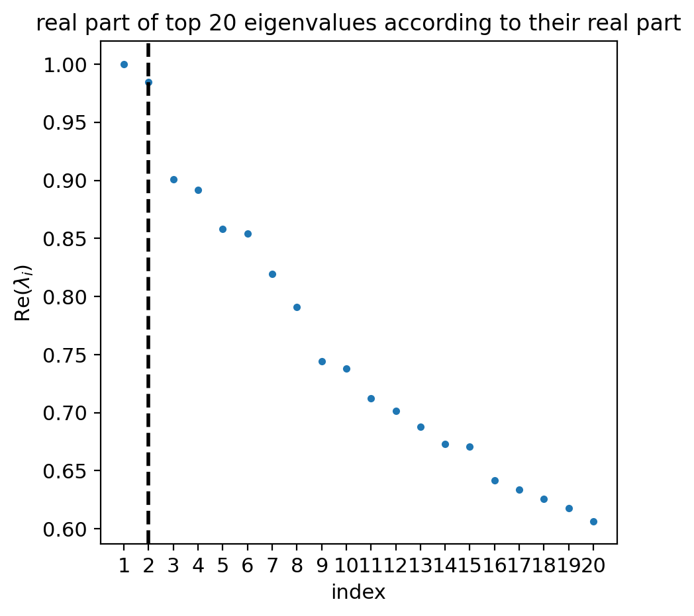

Intestinal organoid differentiation - Kinetic rate change over (pseudo)time#
Library imports#
import os
import sys
import pandas as pd
from scipy.sparse import csr_matrix
import cellrank as cr
import scanpy as sc
import scvelo as scv
from cr2 import running_in_notebook
sys.path.extend(["../../", "."])
from paths import DATA_DIR, FIG_DIR # isort: skip # noqa: E402
Global seed set to 0
General settings#
sc.settings.verbosity = 3
scv.settings.verbosity = 3
scv.settings.set_figure_params("scvelo", dpi_save=400, transparent=True, color_map="viridis")
SAVE_FIGURES = False
if SAVE_FIGURES:
os.makedirs(FIG_DIR / "labeling_kernel", exist_ok=True)
Data loading#
adata = sc.read(DATA_DIR / "sceu_organoid" / "processed" / "preprocessed.h5ad")
adata.layers["alpha"] = pd.read_csv(DATA_DIR / "sceu_organoid" / "results" / "alpha.csv", index_col=0).values
adata.layers["gamma"] = pd.read_csv(DATA_DIR / "sceu_organoid" / "results" / "gamma.csv", index_col=0).values
adata.layers["r0"] = pd.read_csv(DATA_DIR / "sceu_organoid" / "results" / "r0.csv", index_col=0).values
velo_pseudotime = pd.read_csv(DATA_DIR / "sceu_organoid" / "results" / "velocity_pseudotime.csv", index_col=0)
velo_pseudotime.index = velo_pseudotime.index.astype(str)
adata.obs = adata.obs.merge(velo_pseudotime, left_index=True, right_index=True)
del velo_pseudotime
adata
AnnData object with n_obs × n_vars = 3452 × 2000
obs: 'experiment', 'labeling_time', 'cell_type', 'som_cluster_id', 'cell_type_merged', 'initial_size', 'n_counts', 'velocity_pseudotime'
var: 'ensum_id', 'gene_count_corr', 'means', 'dispersions', 'dispersions_norm', 'highly_variable'
uns: 'cell_type_colors', 'neighbors', 'pca', 'umap'
obsm: 'X_pca', 'X_umap', 'X_umap_paper'
varm: 'PCs'
layers: 'labeled', 'total', 'unlabeled', 'alpha', 'gamma', 'r0'
obsp: 'connectivities', 'distances'
goblet_markers = (
pd.read_csv(DATA_DIR / "sceu_organoid" / "processed" / "goblet_markers.csv")["Gene"].str.lower().tolist()
)
goblet_markers = adata.var_names[adata.var_names.str.lower().isin(goblet_markers)]
Data preprocessing#
adata.layers["labeled_smoothed"] = csr_matrix.dot(adata.obsp["connectivities"], adata.layers["labeled"]).A
adata.layers["alpha_smoothed"] = csr_matrix.dot(adata.obsp["connectivities"], adata.layers["alpha"])
adata.layers["gamma_smoothed"] = csr_matrix.dot(adata.obsp["connectivities"], adata.layers["gamma"])
adata.layers["r0_smoothed"] = csr_matrix.dot(adata.obsp["connectivities"], adata.layers["r0"])
adata.layers["velocity_labeled"] = adata.layers["alpha"] - adata.layers["gamma"] * adata.layers["labeled_smoothed"]
CellRank#
vk = cr.kernels.VelocityKernel(adata, xkey="labeled_smoothed", vkey="velocity_labeled").compute_transition_matrix()
ck = cr.kernels.ConnectivityKernel(adata).compute_transition_matrix()
combined_kernel = 0.8 * vk + 0.2 * ck
Estimator analysis#
estimator = cr.estimators.GPCCA(combined_kernel)
estimator.compute_schur(n_components=20)
if running_in_notebook():
estimator.plot_spectrum(real_only=True)

Macrostates#
estimator.compute_macrostates(n_states=12, cluster_key="cell_type")
GPCCA[kernel=(0.8 * VelocityKernel[n=3452] + 0.2 * ConnectivityKernel[n=3452]), initial_states=None, terminal_states=None]
estimator.set_terminal_states(states=["Enterocytes", "Paneth cells", "Enteroendocrine progenitors", "Goblet cells"])
terminal_states = estimator.terminal_states.cat.categories
Fate probabilities#
estimator.compute_fate_probabilities()
[0]PETSC ERROR: ------------------------------------------------------------------------
[0]PETSC ERROR: Caught signal number 13 Broken Pipe: Likely while reading or writing to a socket
[0]PETSC ERROR: Try option -start_in_debugger or -on_error_attach_debugger
[0]PETSC ERROR: or see https://petsc.org/release/faq/#valgrind and https://petsc.org/release/faq/
[0]PETSC ERROR: configure using --with-debugging=yes, recompile, link, and run
[0]PETSC ERROR: to get more information on the crash.
Abort(59) on node 0 (rank 0 in comm 0): application called MPI_Abort(MPI_COMM_WORLD, 59) - process 0
Driver analysis#
gene_ranks = {terminal_state: pd.DataFrame() for terminal_state in terminal_states}
gene_ranks_gex = {terminal_state: pd.DataFrame() for terminal_state in terminal_states}
drivers = {}
for terminal_state in terminal_states:
drivers[terminal_state] = estimator.compute_lineage_drivers(
layer="alpha",
cluster_key="cell_type",
lineages=[terminal_state],
clusters=["Stem cells", terminal_state],
return_drivers=True,
)
drivers[terminal_state] = drivers[terminal_state].merge(
pd.DataFrame(drivers[terminal_state].sort_values(by=f"{terminal_state}_corr", ascending=False).index)
.reset_index()
.rename({"index": f"Corr. rank - {terminal_state}", 0: "Gene"}, axis=1)
.set_index("Gene"),
left_index=True,
right_index=True,
)
drivers = pd.concat(drivers.values(), axis=1)
drivers_gex = {}
for terminal_state in terminal_states:
drivers_gex[terminal_state] = estimator.compute_lineage_drivers(
layer="labeled_smoothed",
cluster_key="cell_type",
lineages=[terminal_state],
clusters=["Stem cells", terminal_state],
return_drivers=True,
)
drivers_gex[terminal_state] = drivers_gex[terminal_state].merge(
pd.DataFrame(drivers_gex[terminal_state].sort_values(by=f"{terminal_state}_corr", ascending=False).index)
.reset_index()
.rename({"index": f"Corr. rank - {terminal_state}", 0: "Gene"}, axis=1)
.set_index("Gene"),
left_index=True,
right_index=True,
)
drivers_gex = pd.concat(drivers_gex.values(), axis=1)
Parameters vs pseudotime#
"""
sorted_genes = drivers["Corr. rank - Goblet cells"].sort_values()
var_names = sorted_genes[sorted_genes.index.isin(goblet_markers) & (sorted_genes < 100)].index
"""
cooperative_genes = [
"Sytl2",
"Fcgbp",
"Spink4",
"Rap1gap",
"Fry",
"Galnt5",
"Agr2",
"Ttc39a",
"Creld2",
"Defa17",
"Fxyd3",
"Tmco3",
"Hid1",
"Cracr2a",
]
destructive_genes = ["Syt7", "Atp2c2", "Slc12a8", "Atp2a3", "Spdef", "Tfcp2l1", "Tff3", "Rassf6"]
var_names = cooperative_genes + destructive_genes
model = cr.models.GAM(adata)
if SAVE_FIGURES:
save = FIG_DIR / "labeling_kernel" / "heatmap_transcription_rate_goblet_markers-goblet_lineage.png"
else:
save = None
cr.pl.heatmap(
adata,
model,
data_key="alpha_smoothed",
genes=var_names,
gene_order=var_names,
show_fate_probabilities=False,
show_all_genes=True,
lineages="Goblet cells",
time_key="velocity_pseudotime",
figsize=(10, 5),
n_jobs=8,
save=save,
)
if SAVE_FIGURES:
save = FIG_DIR / "labeling_kernel" / "heatmap_degradation_rate_goblet_markers-goblet_lineage.png"
else:
save = None
cr.pl.heatmap(
adata,
model,
data_key="gamma_smoothed",
genes=var_names,
gene_order=var_names,
show_fate_probabilities=False,
show_all_genes=True,
lineages="Goblet cells",
time_key="velocity_pseudotime",
figsize=(10, 5),
n_jobs=8,
save=save,
)
if SAVE_FIGURES:
save = FIG_DIR / "labeling_kernel" / "heatmap_transcription_rate_goblet_markers-enterocyte_lineage.png"
else:
save = None
cr.pl.heatmap(
adata,
model,
data_key="alpha_smoothed",
genes=var_names,
gene_order=var_names,
show_fate_probabilities=False,
show_all_genes=True,
lineages="Enterocytes",
time_key="velocity_pseudotime",
figsize=(10, 5),
n_jobs=8,
save=save,
)
if SAVE_FIGURES:
save = FIG_DIR / "labeling_kernel" / "heatmap_degradation_rate_goblet_markers-enterocyte_lineage.png"
else:
save = None
cr.pl.heatmap(
adata,
model,
data_key="gamma_smoothed",
genes=var_names,
gene_order=var_names,
show_fate_probabilities=False,
show_all_genes=True,
lineages="Enterocytes",
time_key="velocity_pseudotime",
figsize=(10, 5),
n_jobs=8,
save=save,
)
Global seed set to 0
Global seed set to 0
Global seed set to 0
Global seed set to 0
Global seed set to 0
Global seed set to 0
Global seed set to 0
Global seed set to 0
[0]PETSC ERROR: ------------------------------------------------------------------------
[0]PETSC ERROR: Caught signal number 13 Broken Pipe: Likely while reading or writing to a socket
[0]PETSC ERROR: Try option -start_in_debugger or -on_error_attach_debugger
[0]PETSC ERROR: or see https://petsc.org/release/faq/#valgrind and https://petsc.org/release/faq/
[0]PETSC ERROR: configure using --with-debugging=yes, recompile, link, and run
[0]PETSC ERROR: to get more information on the crash.
Abort(59) on node 0 (rank 0 in comm 0): application called MPI_Abort(MPI_COMM_WORLD, 59) - process 0
did not converge
[0]PETSC ERROR: ------------------------------------------------------------------------
[0]PETSC ERROR: Caught signal number 13 Broken Pipe: Likely while reading or writing to a socket
[0]PETSC ERROR: Try option -start_in_debugger or -on_error_attach_debugger
[0]PETSC ERROR: or see https://petsc.org/release/faq/#valgrind and https://petsc.org/release/faq/
[0]PETSC ERROR: configure using --with-debugging=yes, recompile, link, and run
[0]PETSC ERROR: to get more information on the crash.
Abort(59) on node 0 (rank 0 in comm 0): application called MPI_Abort(MPI_COMM_WORLD, 59) - process 0
[0]PETSC ERROR: ------------------------------------------------------------------------
[0]PETSC ERROR: Caught signal number 13 Broken Pipe: Likely while reading or writing to a socket
[0]PETSC ERROR: Try option -start_in_debugger or -on_error_attach_debugger
[0]PETSC ERROR: or see https://petsc.org/release/faq/#valgrind and https://petsc.org/release/faq/
[0]PETSC ERROR: configure using --with-debugging=yes, recompile, link, and run
[0]PETSC ERROR: to get more information on the crash.
Abort(59) on node 0 (rank 0 in comm 0): application called MPI_Abort(MPI_COMM_WORLD, 59) - process 0